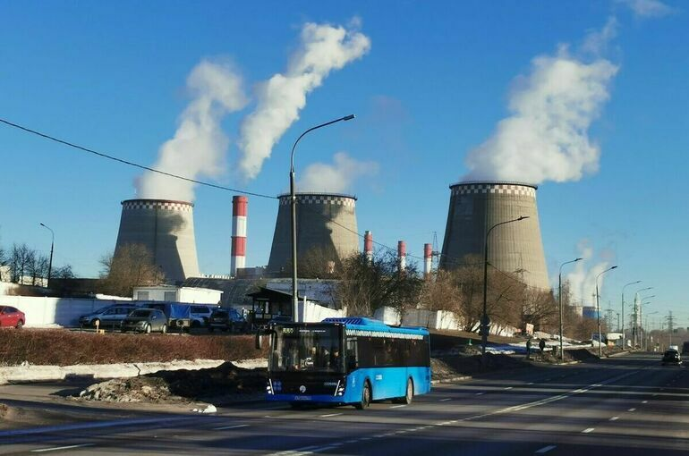

Система «Экомониторинг» начнет полноценную работу весной 2025 года
Следить за вредными выбросами и получать информацию о состоянии окружающей среды можно будет на одной платформе. Об этом рассказал министр природных ресурсов и экологии Александр Козлов на заседании Комитета Госдумы по бюджету и налогам 19 октября. Города — участники проекта «Чистый воздух» станут первыми, где заработает комплексная информационная система состояния окружающей среды — ФГИС «Экомониторинг». Затем ее распространят на другие населенные пункты. «Модуль «Воздух» введем в эксплуатацию в 2024 году. Полномасштабно ФГИС заработает с весны 2025 года. Именно с этого момента все организации и органы власти будут обязаны предоставлять данные в систему», — сообщил глава ведомства. ФГИС будет работать на государственной платформе «ГосТех». Необходимые документы согласованы с Минцифры, а в бюджете предусмотрены средства на эти цели.